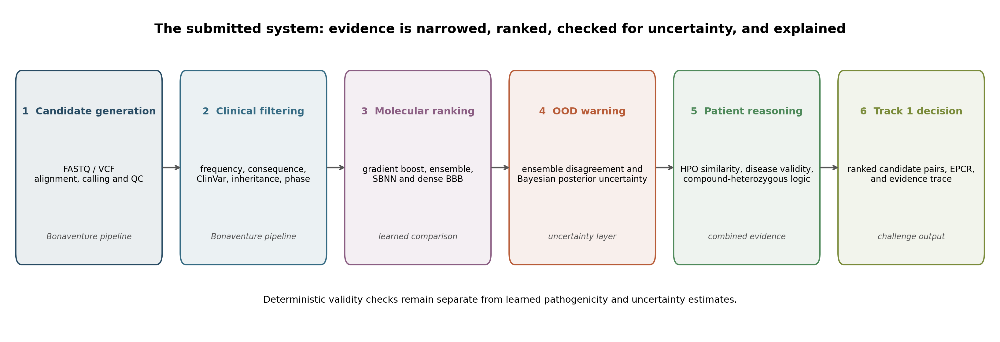
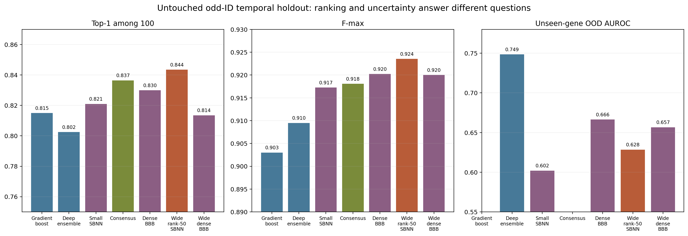
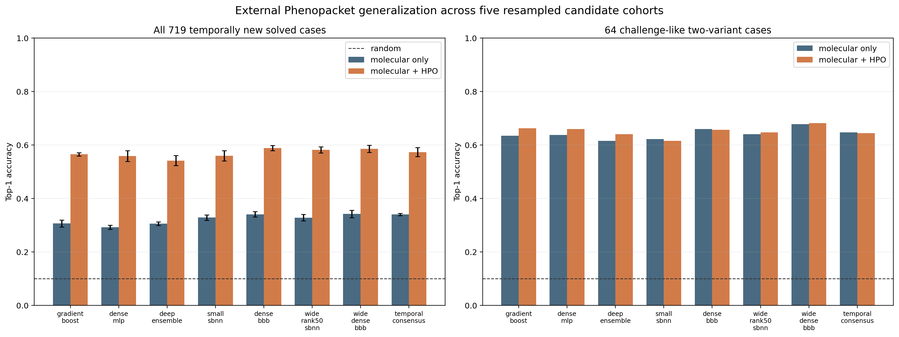
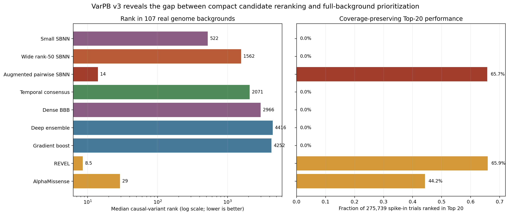

01
Read the enormous book
Sequencing turns DNA into data. We check its quality and line it up against a reference genome so each difference has an address.
A genome is a three-billion-letter instruction book. We built an AI-assisted system that filters millions of spelling differences, connects them to a child’s symptoms, and ranks the explanations a specialist should inspect first.
Bayesian Uncertainty Under Temporal and Patient Shift
GenAI for Health Workshop @ NeurIPS 2026 · SydneyFinding the accepted variant pair in one child was the starting point. The paper asks a more demanding question: which parts of a rare-disease ranking system can be trusted when the data, the patient, or the search space changes?
Across 43 pages, we separate candidate generation, molecular ranking, phenotype evidence, and uncertainty. We compare deterministic baselines, deep ensembles, singular Bayesian neural networks, Bayes-by-Backprop, wider architectures, and a predictor-augmented pairwise SBNN.
The child’s DNA contains many differences that are completely harmless. The difficult part is deciding which few deserve attention—and doing so in a way that is fast, traceable and honest about uncertainty.
Sequencing turns DNA into data. We check its quality and line it up against a reference genome so each difference has an address.
Most variants are common or biologically unlikely to explain the disease. Evidence-based filters remove this background noise.
The remaining candidates are compared with the child’s clinical features, then several models rank the most coherent explanations.
The system ranked two changes in the same gene as the strongest candidate pair. This is the type of pattern known as compound heterozygosity: two different variants may jointly disrupt the two copies of one gene.
This is a research ranking result—not a clinical diagnosis. Laboratory and family-based confirmation remain essential.
BUB1B encodes BUBR1, a protein central to the checkpoint that helps cells distribute chromosomes correctly during division.
A stop-gain variant with strong clinical evidence, high predicted impact, and no observed homozygotes in the population reference used.
An ultra-rare missense variant with computational support, but without independent proof of pathogenicity or confirmed phase with the first allele.
Together they form the strongest causal hypothesis for the MVA phenotype. The paper is explicit that parental or long-range phasing and functional validation are still needed.
Each stage has one job. A candidate can be traced from raw genome data to its final position in the ranked list.
Place each DNA read at the right location in the reference genome.
Keep rare, high-quality changes with plausible biological effects.
Form candidate pairs and compare their genes with the child’s symptoms.
Ask multiple AI models—and measure when their answers are uncertain.
Deliver a short, auditable list for expert review.

One model can be confidently wrong. We therefore built different kinds of learners and tested them under the same rules. Some are fast pattern finders, some act like a committee, and Bayesian models keep a distribution of plausible answers instead of pretending one set of parameters is certainly correct.
Builds many small decision trees and combines their votes.
Learns layered nonlinear patterns from variant features.
Uses disagreement among five networks as a warning signal.
Learns uncertainty with efficient low-rank weight structure.
Places uncertainty over every neural-network weight.
The strongest temporal ranker and our selected challenge model.
Tests whether low-rank structure helps at the same width.
Blends complementary tree, ensemble and SBNN signals.
Integrates protein predictors for realistic genome-scale ranking.
We froze the key choices, moved forward in time, tried independent solved cases and finally searched realistic whole-genome backgrounds. Each test asks a harder question.
The BUB1B pair was placed first. All eight submission-era learned models agreed.
The selected SBNN found the correct item first when ranking later ClinVar variants among 100 candidates.
We tested symptom-aware reranking over five independently resampled candidate cohorts.
The augmented SBNN recovered the causal variant in its first 100 suggestions across 275,739 trials.
Every compatible learned adapter placed the accepted pair first once the biologically constrained six-pair shortlist existed. We therefore evaluated the ranking layer on separate data where models could meaningfully disagree. That distinction—between producing valid candidates and ranking them—is central to the paper.
A perfect score on one known case is encouraging, but it is not enough. We deliberately tested whether the models could face newer records, different patients and far larger search spaces.
Models learned from the December 2023 ClinVar release and were tested only on later, unseen identifiers.
Phenotype information improved ranking across every evaluated model in repeated post-2023 case cohorts.
2,577 causal variants were crossed with 107 real backgrounds to create 275,739 locked trials.
Models learned from a December 2023 ClinVar snapshot. The untouched evaluation contains 313,171 odd-ID records absent in that snapshot and present by August 2026.
Takeaway: the wide rank-50 SBNN ranked best, while the deep ensemble detected unfamiliar genes best. Ranking and uncertainty are different capabilities.

We evaluated 719 deduplicated solved Phenopacket cases whose causal variants were absent from ClinVar 2023, including 64 two-variant cases closest to the hackathon setting.
Takeaway: phenotype evidence helped strongly when historical gene–phenotype knowledge existed, but provided almost no aggregate improvement for unseen genes.

VarPB crossed 2,577 causal variants with exonic candidates from 107 real genomes, creating 275,739 locked spike-in trials with complete score-file coverage.
Takeaway: the augmented SBNN matched REVEL within 0.20 point at Top-20 and exceeded it by 1.81 points at Top-100; REVEL remained stronger at Top-1 and MRR.

On the full-background VarPB benchmark, our predictor-augmented SBNN nearly matched REVEL at Top-20 and surpassed it at Top-100. It also substantially outperformed AlphaMissense at both shortlist sizes.
Higher is better. “Top-100” asks whether the causal variant appears anywhere in the first 100 candidates sent for review.
Traditional models often return one confident-looking score. Our Bayesian models can generate many plausible predictions, revealing where the answer is stable and where more evidence or human review is needed. That uncertainty is part of the output—not an afterthought.
How strongly do the observed variant features resemble pathogenic evidence?
How stable is the prediction across posterior samples or independently trained networks?
Does the reference knowledge actually contain the candidate gene–disease relationship?
Are the variants real, rare, inheritance-compatible, correctly represented, and plausibly in trans?
The paper argues that decision-support systems should report these signals separately so that a fluent explanation cannot hide an unsupported ranking.
The repository contains the models, ranked outputs, evaluation tables, integrity hashes, tests, the full paper, and supporting technical material. It intentionally excludes the private 85 GB patient bundle and all personally sensitive source data.
Next: broader clinical cohorts, additional ancestries and sequencing platforms, long-read or family phasing, and prospective calibration studies.